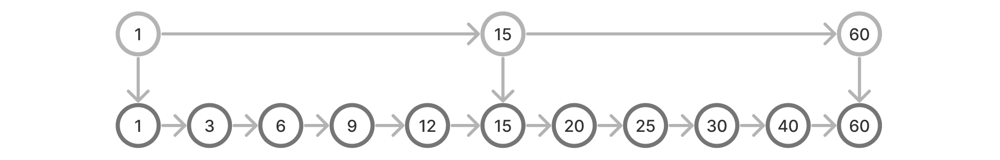
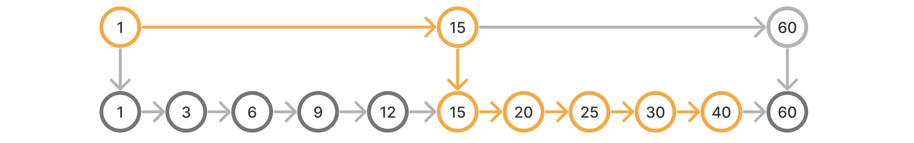
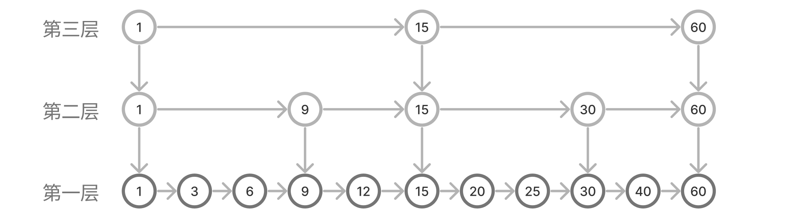
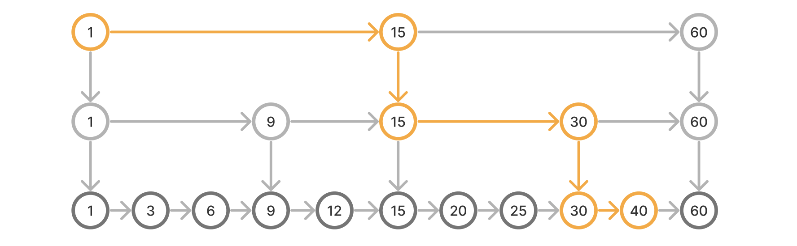
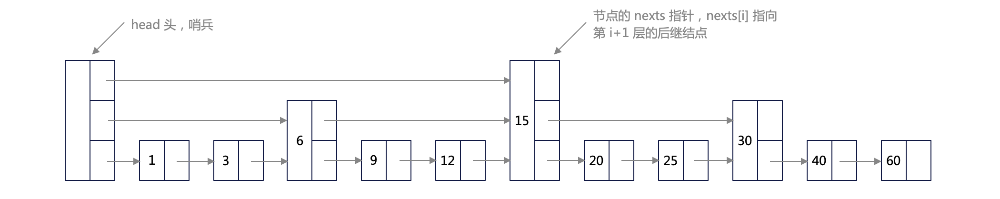
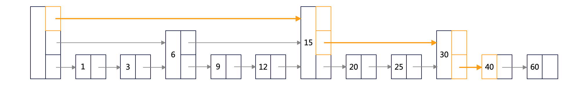
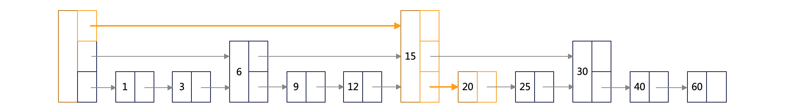
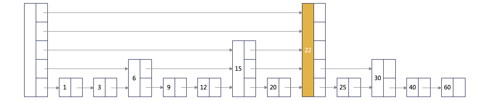
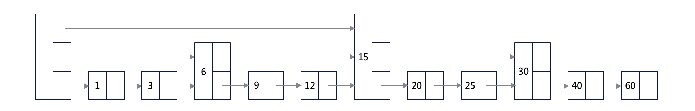

Why Skip Lists When We Have Red-Black Trees?
Picking up where we left off — in our previous article, How Red-Black Trees Came to Be, we explored how red-black trees (which are essentially an elegant mapping of 2-3 or 2-3-4 trees) maintain the balance of binary search trees. From an engineering perspective, although red-black trees are a substantial simplification over raw 2-3 trees, implementing them correctly remains notoriously complex and error-prone.
Is there a simpler, more intuitive path to achieving the same efficiency?
Born from the Core of Binary Search
In our earlier article, The Essence of Binary Search Trees, we derived binary search trees by converting a binary search on a sorted array into a dynamic, pointer-linked structure. This time, let's start from that same foundation — binary search on sorted data — and see if we can invent a different, equally elegant structure.
The twist this time: we begin by representing our sorted data as a singly linked list.
As shown in the figure, we now have a sorted linked list. Suppose we want to search for the element 40.
The naive approach is to traverse the list from the head node, one element at a time. This yields a disappointing time complexity of O(n) — a far cry from the performance we need.
Our initial instinct: can we perform a binary search on this linked list?
With an array, we can jump directly to the middle element (15) using an address offset, determine that 40 is greater than 15, and then recurse on the right half.
The bottleneck with a linked list is that we cannot jump directly to an arbitrary index; there is no constant-time address offset trick available.
But let's not give up just yet. Is there a way to simulate binary search behavior by augmenting our linked list with a few extra pointers?
Since a linked list restricts us to pointer-based traversal, what if we added a sparse layer of pointers between key nodes — such as the head, the tail, and the midpoint elements that a binary search would naturally hit — to allow us to bypass large chunks of the list?

We construct an auxiliary, higher-level linked list (1 → 15 → 60), where each index node also holds a down pointer pointing to its counterpart in the original list below.
What does this architectural upgrade buy us?
Let's re-evaluate our search for the element 40.
We begin our traversal on the upper (second-level) index list. In just two hops, we reach element 15. Since 40 lies between 15 and 60 (the next node in the index list), we follow the down pointer from 15 to descend into the first-level list. From there, we resume our search.

Unlike a linear scan, by introducing a single index layer, we can leap directly to the midpoint of the dataset, effectively mimicking the first step of a binary search. Our search efficiency has instantly doubled.
Can we push this optimization further?
In the diagram above, the search after descending past 15 is still linear. We can recursively apply our indexing strategy — building additional index layers for the sub-lists between 1–15 and 15–60:

While the diagram may look slightly intimidating at first glance, it is simply a multi-tiered simulation of a binary search tree.
Let's trace it from the top down.
The third layer executes the first binary partition, using 15 as the pivot. Depending on the comparison, we route our search to either the 1–15 range or the 15–60 range.
The second layer performs the next level of binary partitioning within that selected range, narrowing down to a finer-grained interval.
By starting our search from the topmost index layer and dropping down as needed, we are successfully executing a binary search over a linked list.
This is a brilliant conceptual leap.
Let's trace the search path for element 40 with two layers of indexes in place:

Compared to a flat linked list, our search path is drastically shorter.
Unlike a standard linked list, this structure leverages index layers to "skip" over large blocks of nodes. Hence its wonderfully descriptive name: a skip list.
Because a skip list is a structural mirror of binary search, it boasts a search time complexity of O(log n) — matching the performance of balanced binary trees.
The Node Architecture
A skip list node (except for those in the bottom layer) must store not only a pointer to its successor (and its predecessor in a doubly linked variant) but also a pointer to the matching node in the layer below. A naive TypeScript implementation might look like this:
class Node {
key: number
val: unknown
next: Node | null
down: Node | null
public constructor(key: number, val: unknown) { }
}Let's analyze whether this design has any structural drawbacks.
First, an observation: using auxiliary index lists to accelerate search is a textbook space-for-time trade-off.
However, instantiating a brand-new node object for the exact same element (such as 15) at every single layer feels highly inefficient and wasteful.
All nodes representing element 15 across the different layers share the exact same key and value. The only structural difference is their next pointers — each layer points to a different successor. Furthermore, the down pointer always flows vertically downward.
We can optimize this by merging the multi-layer nodes representing a single element into a single, unified node object. We replace the individual next and down pointers with an array of forward pointers, nexts, where nexts[i] stores the successor of the node at layer i+1.

As illustrated, this optimization introduces four key changes:
- We consolidate the multi-layer representation of an element into a single node.
- We introduce a
nextspointer array, wherenode.nexts[i]references the successor at layer i+1. - We add a sentinel
headnode (which contains no actual key or value) to simplify boundary conditions and clean up our code. - We no longer construct index arrays for the tail node, saving memory.
Searching for an Element
Let's trace how we find node 40. Every search begins at the sentinel head at the topmost layer and progresses down to layer 1:
- We inspect
head.nexts[top layer]— it points to 15. Since 15 < 40, we advance our position to node 15. - We inspect
node15.nexts[top layer]— it is null, meaning we cannot proceed further right at this level. We drop down to the second layer. - We inspect
node15.nexts[second layer]— it points to 30. Since 30 < 40, we advance our position to node 30. - We inspect
node30.nexts[second layer]— it is null, so we drop down to the first layer. - We inspect
node30.nexts[first layer]— it points to 40. We have successfully found our target! We return the node.

This traversal is incredibly simple and elegant.
Determining Index Heights
Before diving into the insertion algorithm, we must answer a fundamental question: how do we decide how many index layers a newly inserted element should have?
Rather than attempting complex rebalancing, skip lists leverage a remarkably robust tool: probability.
The principle is simple: we design the list such that the number of nodes at layer n is roughly 1/N of the nodes at layer n-1. Mathematically, this means every inserted node has a 1/N probability of being promoted to the layer directly above it.
Using N=4 as a practical example:
- There is a 3/4 probability that a node will only exist at the base layer (layer 1).
- There is a 1/4 probability that a node will be promoted to layer 2.
- There is a 1/16 probability that a node will reach layer 3.
- There is a 1/64 probability that a node will reach layer 4, and so on.
This probabilistic promotion model naturally shapes the skip list into an N-ary tree-like structure on average.
Inserting an Element
Inserting a node runs in O(log n) average time. The core mechanic involves traversing the list to locate and record the predecessor node at each layer, allowing us to splice the new node into the pointer arrays.


Deleting an Element

Deletion in a skip list is the clean inverse of the insertion process: we locate the predecessor nodes at each layer and update their pointers to bypass the target node, removing it from all levels.
Remarkably, deleting and re-inserting the same node restores the exact same structural properties — a testament to the dynamic stability and balance of the skip list.
The Source of Simplicity
If you compare the implementation of insertion and deletion in a red-black tree with that of a skip list, the contrast is stark. The skip list is vastly easier to write, understand, and debug.
While a red-black tree relies on complex rotations, color-flipping, and a web of conditional cases to maintain a strict balance, a skip list relies on local, probabilistic choices. When we insert an element, we calculate its height using a random number generator. Splicing the node only affects its immediate predecessor at each level — a localized mutation that makes the code exceptionally clean and elegant.
In short, embracing probability is what makes this data structure so profoundly simple.
Summary
- We derived the multi-level index architecture of skip lists by adapting the core concept of binary search to a pointer-linked structure.
- We leverage probability to determine node heights, matching the theoretical performance of balanced trees while dramatically simplifying the implementation.
- The key to both insertion and deletion is tracking and updating the predecessor nodes at each level.
- Insertion and deletion are perfect logical inverses of each other, providing natural, dynamic balance.
- While skip lists and red-black trees offer identical algorithmic time complexities, skip lists are significantly easier to implement and provide superior performance for range-based queries.
Full, production-ready source code: https://github.com/linzier/algo-ts